Assignment: marking workflow
Summary
Assignment is the built-in assignment submission and marking tool in the Learn Ultra VLE. It is mostly used for formative, non-anonymous summative and group assignments.
This guide gives a suggested marking workflow for formative or non-anonymous Assignment submissions. It is primarily aimed at Teaching staff.
For student Assignment submission instructions, see our student guides to submitting assignments on the VLE.
Video demonstrations
Use the video demonstrations here for a quick start on accessing and marking submissions, or for more detail see the in-depth written guidance below.
Marking Ultra Assignments: accessing submissions [YouTube]
Marking Ultra Assignments: annotations, feedback & marks [YouTube]
Marking process
It is possible to add and edit marks directly in the Gradebook Grid View, but this has some implications for how marks may appear, so we recommend all edits are done in the main marking interface.
1. Open a submission
A counter displays on the Gradebook tab when there are submissions that need marking.
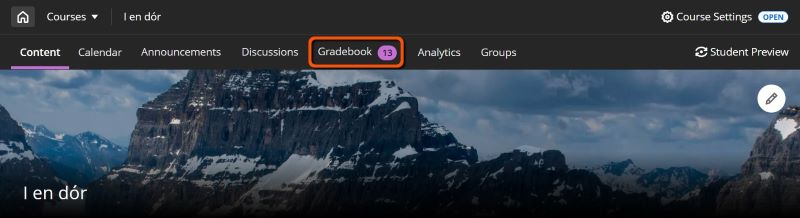
There are various ways to open a submission. There is only one marking interface though, so you can use whichever you prefer.
Use for: direct access to an Assignment's Submissions tab
In the Course Content area, open the Assignment then select the Submissions tab. Click on a student's row to open their submission.
The table also shows the numbers of attempts made by each student and the date of the last submission. Grades also display here once work is marked.
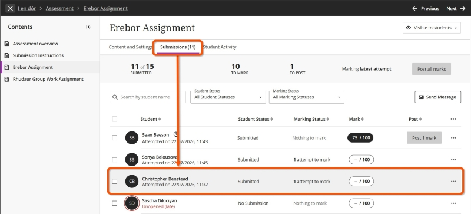
Use for: filtering for a specific marking group or assessment, or for quick access to a particular submission.
Note
This tab may not be available on very small screens (eg. a mobile phone).
Click Gradebook in the top navigation bar. The Grid View is the default view, but can be selected specifically using the Grid View icon (small squares in a 2x2 block). This displays a grid of students enrolled on the site (rows) and assessment items (columns).
To filter for a marking group, click the Filter icon (three stracked horizontal sliders) above the grid to open the Filters and Views panel. Open the Groups dropdown and select the relevant group (and/or select ofther filters) then click Apply.
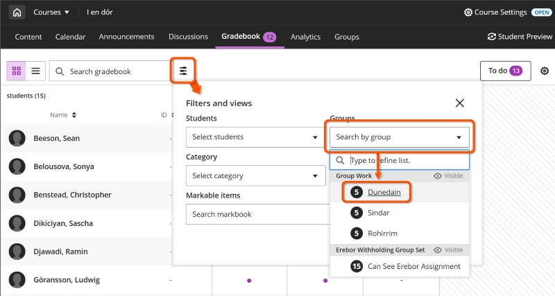
To open a specific student's submission, click the relevant cell to open the Mark details panel, then click Mark submission (for ungraded submissions) or View submission (for graded submissions).
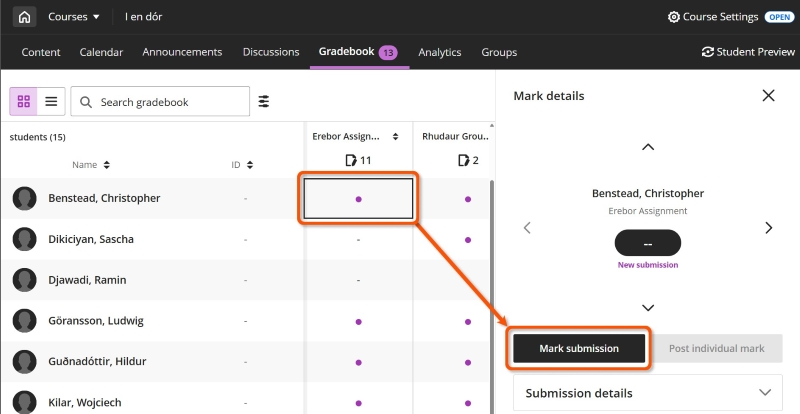
Use for: a summary of marking status for all assessment items.
Click Gradebook, then select the List View icon (three stacked horizontal lines). This displays all assessment items in the site with the due date and number of submissions left to mark or post.
Click the title of an assessment (or the number in the Marking Status column) to open its Submissions tab.
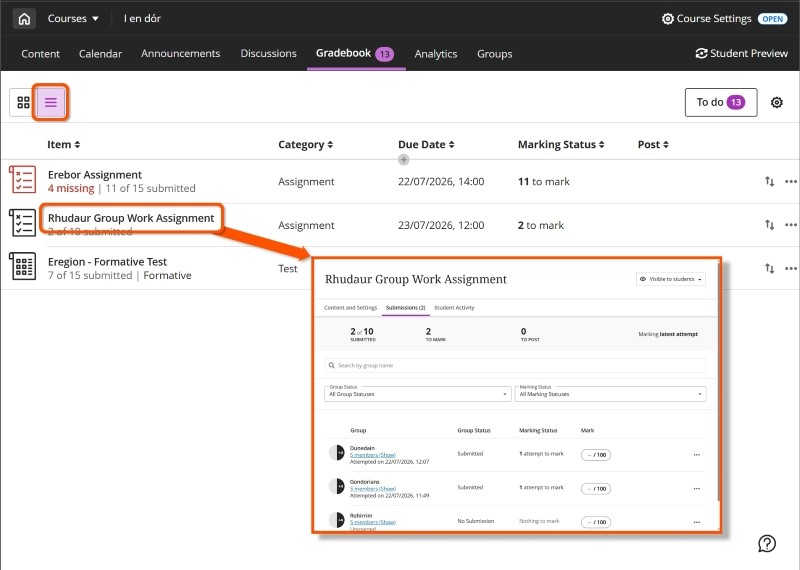
2. Late submissions: check for previous submissions
Tip
University assessment policy is to mark the last on-time submission, or to mark the first submission if all submissions are late. The correct attempt to mark may not be the default attempt presented for marking.
Ultra Assignment stores all submissions made by a student. If a students makes multiple submissions, the default should be to present the last submission (attempt) for marking. Depending on when this was submitted, it may or may not be the correct attempt to mark:
- Last attempt is on time: mark this attempt.
- Last attempt is late: check for previous submissions.
If there are:
- no other submissions: mark this attempt.
- any on-time submissions: manually select and mark the last on-time attempt.
- no on-time submissions, but previous late submissions: manually select and mark the first attempt submitted after the deadline.
If this applies to your marking, the sections below give more details on how to do this.
Identify late submissions
Late submissions are identified in numerous locations:
- Marking interface: in an open submission, a Late label is shown with the attempt information. This is shown to the right of or below the student's name, depending on screen size.
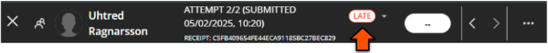
- Assignment submission tab: a student's row shows their total attempts and if any are late, eg. 2 attempts (1 late). For late or missing submissions, this text is red and a red circle is shown around the user icon/photograph.
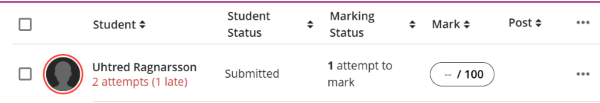
Manually select an attempt to mark
When viewing a submission in the marking interface, you can manually change to a different attempt:
- Click the attempt submission information (where the Late label is shown) to open a list of all attempts.
- Select the attempt to mark (see table above).
- The marking interface will change to the selected attempt. Check the attempt information before you start marking.
For example, a student submits two attempts; one on time, one late. In this case, you should mark the on time attempt. The marking interface displays the late submission (Attempt 2) by default, so click the attempt information and select the on time submission (Attempt 1) to mark.
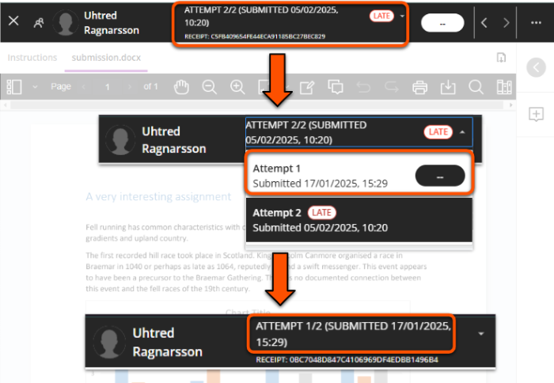
3. Review and annotate
Use the marking interface to review the submitted file and make annotations or comments (if needed). The interface contains:
- an expandable students panel (on the left)
- submission details (top bar)
- main section with the submission to review and annotation menu bar
- an expandable feedback panel (on the right)
Options in the annotation menu bar may be collapsed depending on the size of your screen and whether the Students and Feedback panels are open.
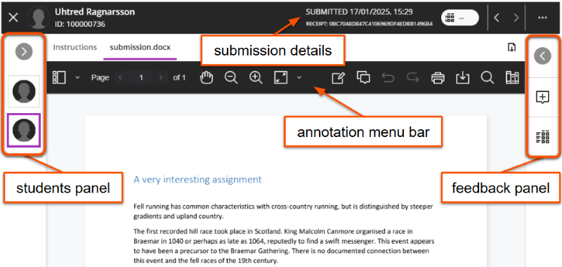
It's possible for students to upload multiple files in the same submission, for example uploading each page of a handwritten submission as a separate image. If this has occurred, the files are shown as tabs above the annotation menu, which you can click to view.
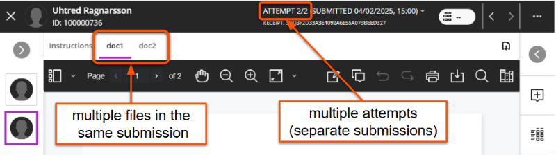
Menu bar: navigate
Navigate the submission file using icons on the left of the menu bar: view thumbnails, pan and zoom.
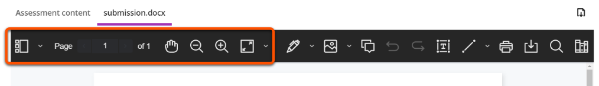
Menu bar: comment & annotate
Warning
Comments are not automatically saved. You must save each comment before navigating away from the submission. Unsaved comments can't be retrieved.
Comments can be added at specific points on the submission:
- Click the Comment icon in the menu bar, then click the desired location. Or, select the relevant text then click the comment icon in the menu above the text.
- Enter your comment into the pop-up box. On a small screen this may appear at the bottom of the window.
- By default, your name will be shown on the comment. If desired, click the Anonymous icon to make the comment anonymously.
- Click the Save button (this may be shown as an up arrow icon).
- To edit, delete or change anonymity of a comment, click the three dots icon and select the relevant option.
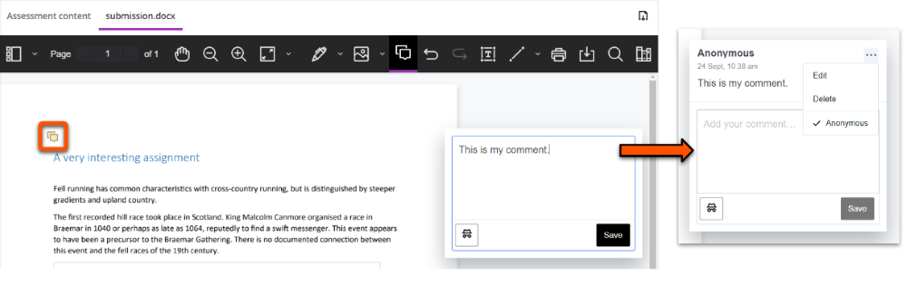
There are also various other annotation options, including drawing, free text and more.
More detail on using other annotation options
The full annotation options are:
- Drawing: draw or write freehand on the file. Especially useful if marking on a tablet.
- Image: add an image or stamp on the file.
- Comment: add a sticky note style-comment in a panel next to the file.
- Text box: type text on the file.
- Lines: draw lines, arrows and other shapes on the file.
- Select text: format text or add comments for specific text.
- Content library: create a bank of reusable comments for common feedback.
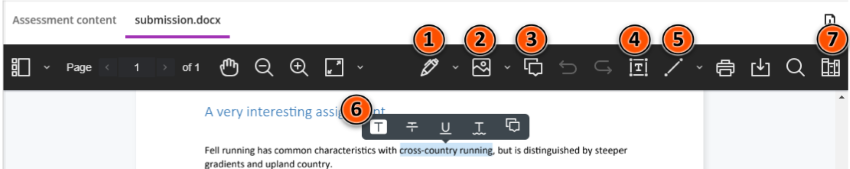
1. Draw/write
- Click the Drawing icon then draw or write on the file as desired.
- Change the colour, thickness and other settings in the menu that appears under the annotation menu.
- To change between drawing, brush and eraser, click the downwards chevron next to the Drawing icon.
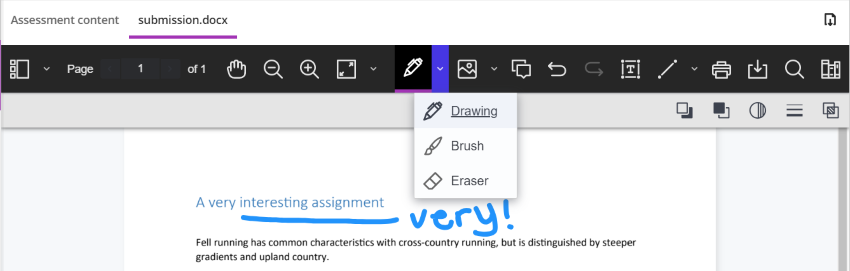
2. Image/file
- Click the Image icon and select an image or file to upload.
- Resize or move the image as desired. The image will be overlaid over the submission.
- Delete, add a note change opacity or rotate using the menu that appears under the annotation menu.
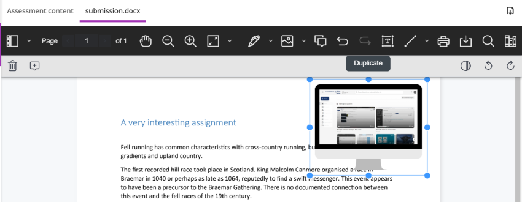
3. Comment
See section above.
4. Text box
- Click the Text icon then click on the file in the location to add text.
- Change the colour, font and other settings in the menu that appears under the annotation menu.
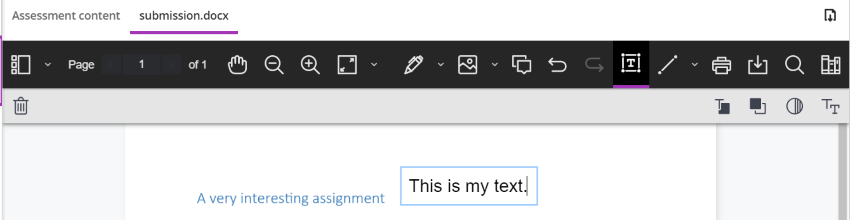
5. Line/shape
- Click the Line icon then click on the file in the location to add it.
- Change the colour, thickness and other settings in the menu that appears under the annotation menu.
- To change the shape, click the downwards chevron next to the Line icon.
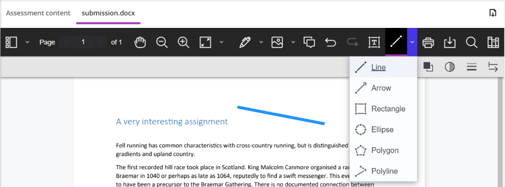
6. Select text
Select submission text to open a new menu to:
- highlight, strikethrough and underline text.
- add comments relating to specific text.
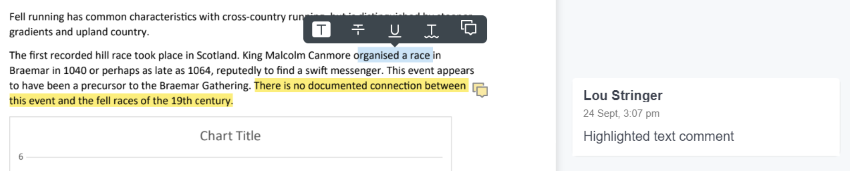
7. Content Library
To save time, you can add common comments to the library to reuse for different students or for different assignments. Comments you add are specific to you; other markers can't see or use them.
- Click the Content Library (books) icon (may be hidden on small screens).
- Depending on the size of your screen, you may need to scroll right and/or collapse the Students panel to see the comments panel.
- To add a new comment to the bank: Click the plus icon, enter the comment in the text box, assign a category (optional) and click Add comment.
- To apply the comment as feedback: click the three dots icons on the relevant comment and click Place comment. Note: the options will disappear and it looks like nothing has happened - this is expected. Click the desired location on the work to add the comment, and follow instructions for 3. Comment above.
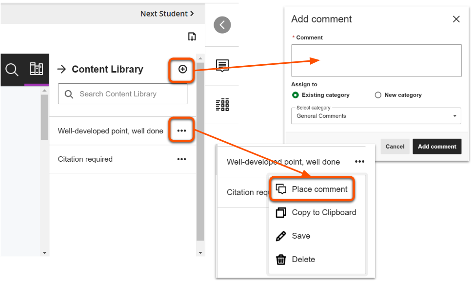
Menu bar: search & export
Search and export the file with options on the right of the menu bar:
- Print or download the annotated file in PDF format. Use the icon above the menu bar to download the original file.
- Search the file for specific content.
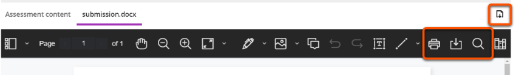
4. Enter feedback and marks
Open the collapsible panel on the right side to enter feedback and access a marking rubric.
You can enter feedback in multiple ways:
- enter text
- upload a file
- record audio or video feedback
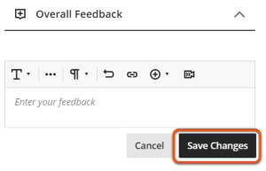
Tip
Feedback is not automatically saved, so you must click Save Changes before leaving the submission.
For most Assignments, you will manually enter a mark. In this case, the Overall Feedback box is the only content in the right tab.
If the assignment uses a marking schema to display qualitative grades (eg. complete/incomplete, or A/B/C/D), you must still enter a numerical mark.
To do enter a mark:
- Click the mark pill in the top right.
- Enter a mark equal to or less than the maximum score shown.
- If marks are set to Post automatically, the mark and feedback will be immediately made available to students once you click elsewhere on the page. If set to Post manually, the mark is saved for posting later.
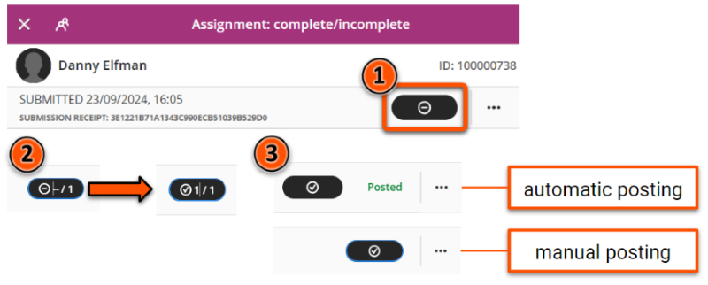
Marks can also be entered directly in the Assignment Submissions tab or the Gradebook Grid view.
Assignments may use a Marking Rubric to efficiently give feedback and mark based on specific criteria. If used, this appears under the Overall Feedback box.
To mark the work, select the relevant mark level for each criterion. The total mark is automatically calculated from your selections.
There are also options to:
- toggle criteria descriptions on/off.
- add criterion-specific feedback.
- expand or collapse each criterion.
For more details, see our guide to Marking Rubrics
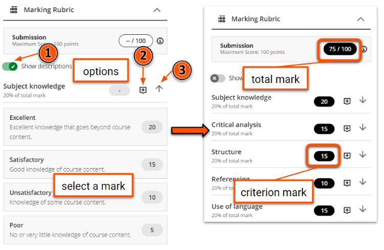
5. Open another submission
In the marking interface, choose another submission in the Student list in the left Student panel, or use the Previous student/Next student arrows above the submission. This can be filtered to only show work that needs marking.
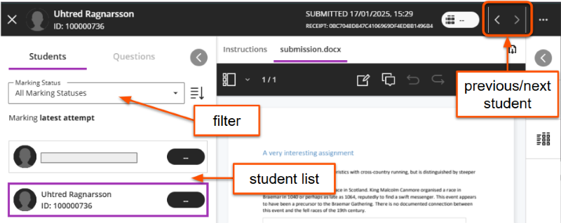
Tip
The marking interface does not filter by group. If you are using a marking group, close the interface and select another student from the filtered Gradebook Marks tab.
You can also select another submission using any of the methods to open a submission described above.
6. Manually post marks
Warning
Post marks means to release marks and feedback to students. They will receive a notification that the marks are available. Once posted, this cannot be undone
For summative assessment, generally assessment administrators will post all marks for the cohort simultaneously.
An Assignment can be set to automatically post marks immdiately after marking , or to manually post marks. If a marking rubric is used, marks must be posted manually.
There are varius ways to post marks manually:
Use to: post marks and release feedback for specific submissions.
- In the marking interface, select the three dots icon next to the mark pill and select Post mark.
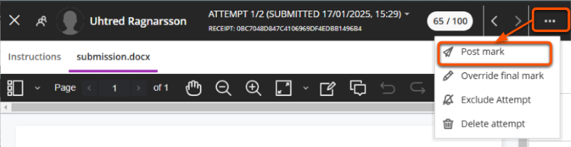
- In the submissions list, click the Post 1 mark button in the relevant student's row (the value shows the number of attempts marked).
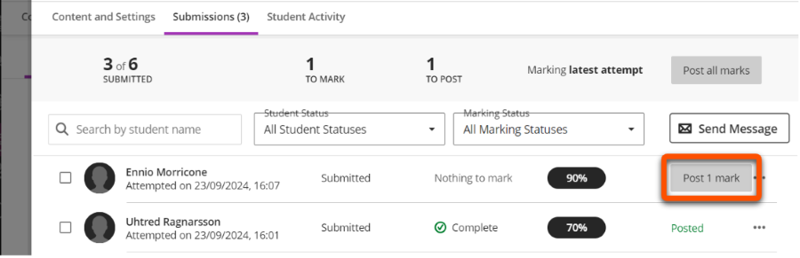
- In the Gradebook Grid View, click the student/assessment cell to open the Marking details panel, then click Post individual mark.
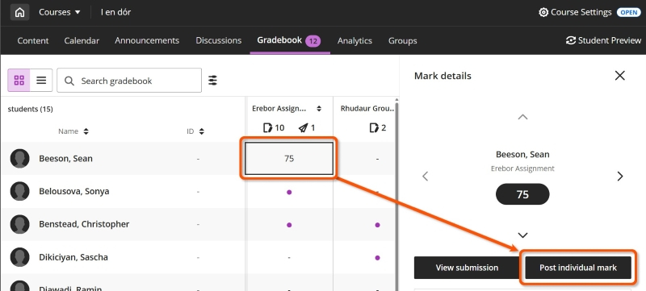
Use to: post marks and release feedback to the whole cohort simultaneously.
- In the marking interface, click the Post marks button at the bottom of the left Students panel.
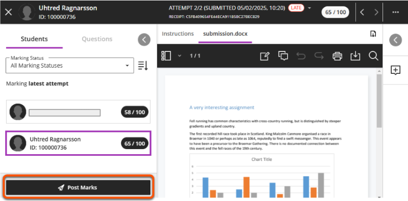
- In the submissions list, click the Post all marks button in the summary bar
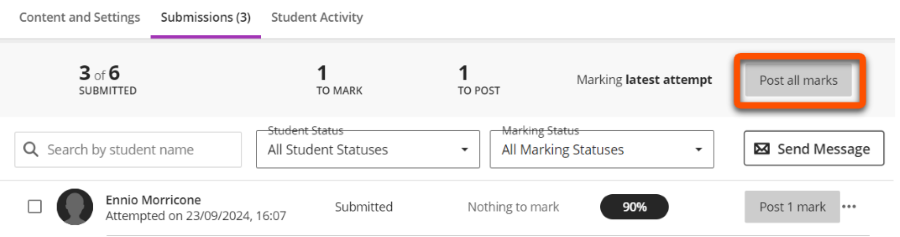
- In the Gradebook Marks tab, click the Assignment column header and click Post all marks.
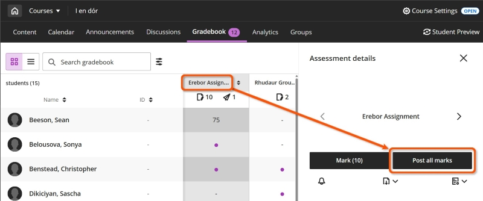
Practice the marking workflow
Warning
We recommend practicing any Assignment workflow in your personal Ultra sandpit site. This is to avoid:
- 'locking in' live Assignment settings after a submission is made.
- potentially sending students unnecessary or confusing notifications.
Use the Student Preview function to submit a file which you can then mark:
- Make sure you are working in your personal Ultra sandpit site.
- Create an Assignment with the same settings as your 'live' Assignment (eg. with or without a rubric, marks posted manually/automatically). Alternatively, use the Copy Content tool to copy an Assignment from your live module site.
- Make sure your test Assignment is Visible to students.
- Click Student Preview in the top right, then click Start Preview.
- Open the Assignment and click View Instructions.
- Drag and drop to upload a file, set the file display name, and then Submit.
- Click Exit in the top right to close Student Preview. When prompted, click Save to retain your submission.
- Back in editing mode, open and mark the submission as described in this guide.
Monitor student review of feedback
Use the feedback review label to monitor whether students have reviewed their mark and feedback for the Assignment.
- Click a student's name on the Grid View to open the student overview page.
- Locate the relevant Assignment in the list.
- Once Assigment marks have been posted (ie. made available to students), the Status column indicates if a student had reviewed their feedback or not.
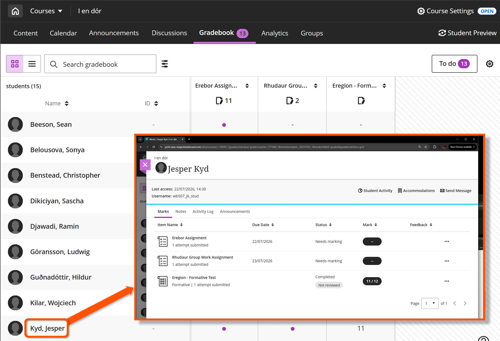